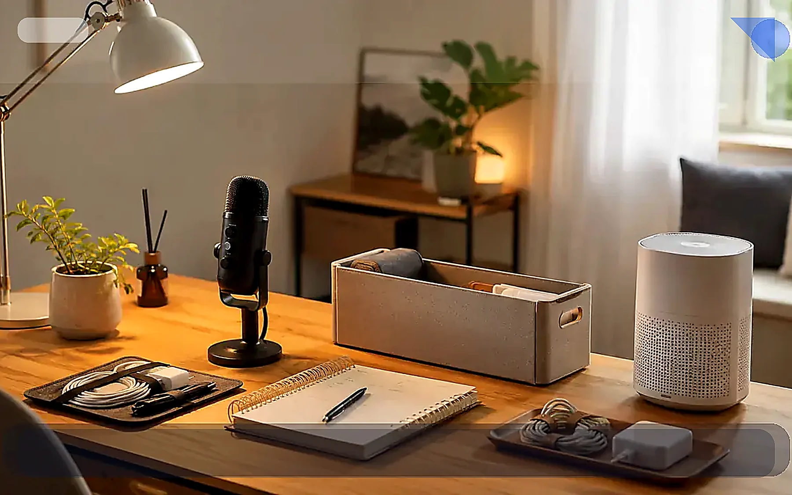

TrendFlow Guide
AI 대본 루틴
1. AI로 쇼츠 대본을 하루 3개 뽑는 루틴
트렌드 키워드 1개를 문제형·비교형·체크리스트형 쇼츠 대본 3개로 확장하는 루틴입니다.
글 보기 →AI 생산성은 도구를 많이 쓰는 것보다 반복 작업을 줄이는 구조를 먼저 만드는 카테고리입니다.
먼저 필요한 글 하나만 골라서 읽어보세요.
트렌드 키워드 1개를 문제형·비교형·체크리스트형 쇼츠 대본 3개로 확장하는 루틴입니다.
글 보기 →문제형, 비교형, 저장형 후킹 문장을 비교해 어떤 주제에 더 잘 맞는지 정리합니다.
글 보기 →
TrendFlow Guide쇼츠, 블로그, 상품 비교, 체크리스트용 프롬프트를 목적별로 저장하는 방법입니다.
글 보기 →쇼츠 주제를 블로그 초안과 카테고리 글로 확장하는 30분 작업 흐름입니다.
글 보기 →짧은 영상에서 상세 글로 자연스럽게 이동시키는 CTA와 내부링크 구조를 정리합니다.
글 보기 →바로 사기 전에 내 상황과 맞는지 먼저 확인하세요.
| 주제 | 글 제목 | 읽는 방식 |
|---|---|---|
| AI 대본 루틴 | AI로 쇼츠 대본을 하루 3개 뽑는 루틴 | 내 상황 확인 → 필요한 기준 보기 → 하나만 적용하기 |
| 후킹 비교 | 반응이 좋은 쇼츠 후킹 문장 패턴 비교 | 내 상황 확인 → 필요한 기준 보기 → 하나만 적용하기 |
| 프롬프트 정리 | 반복 작업을 줄이는 프롬프트 라이브러리 구축법 | 내 상황 확인 → 필요한 기준 보기 → 하나만 적용하기 |
| 블로그 초안 | AI로 블로그 글 초안을 30분 안에 만드는 루틴 | 내 상황 확인 → 필요한 기준 보기 → 하나만 적용하기 |
| 사이트 유입 | 쇼츠를 사이트 유입으로 연결하는 콘텐츠 플로우 | 내 상황 확인 → 필요한 기준 보기 → 하나만 적용하기 |